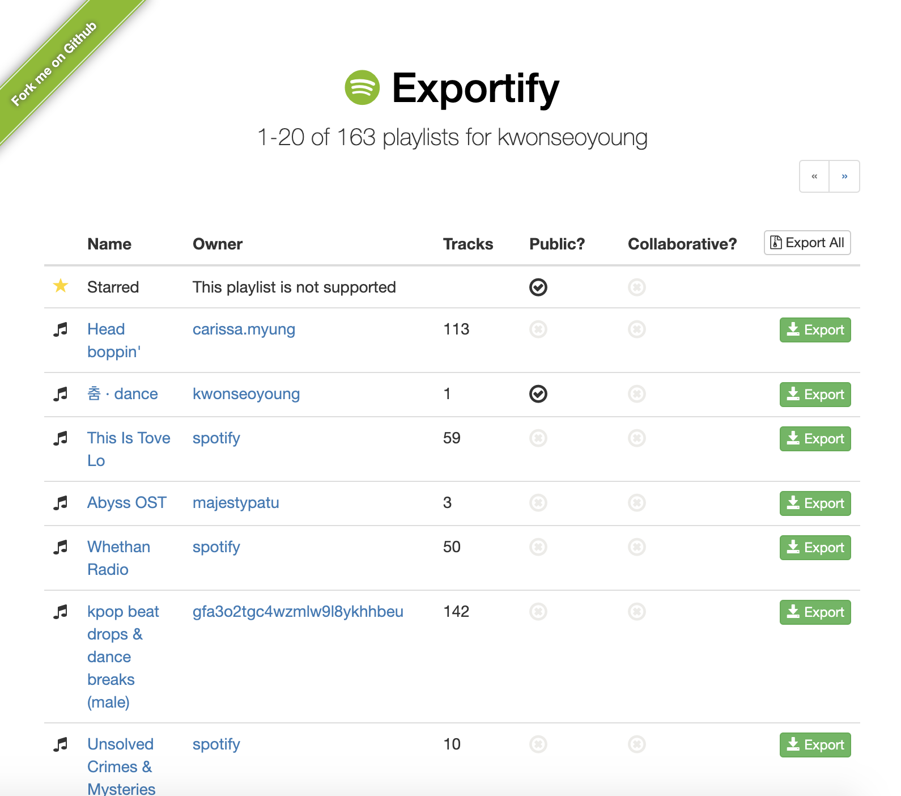
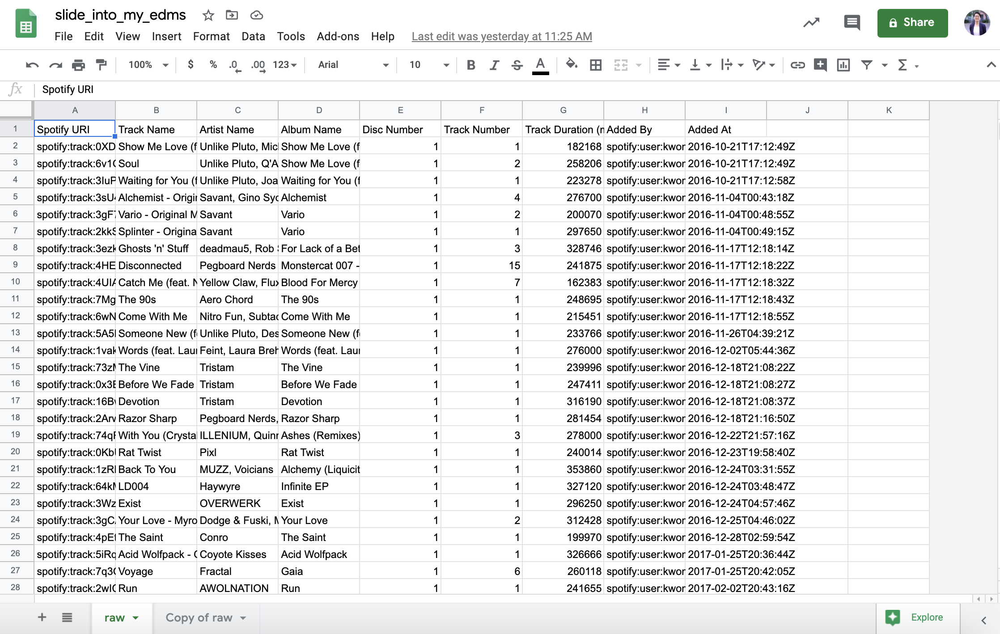
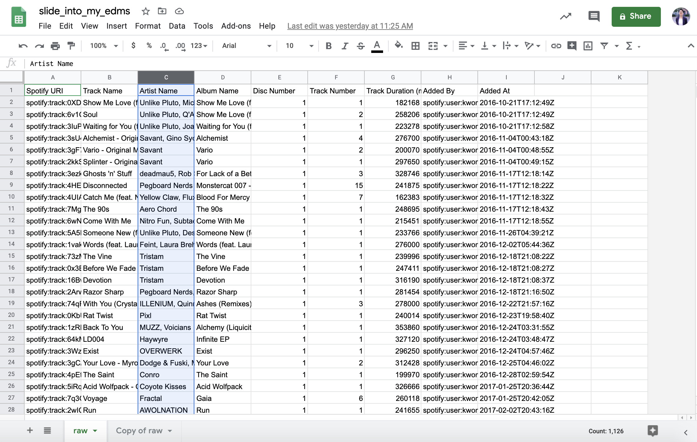
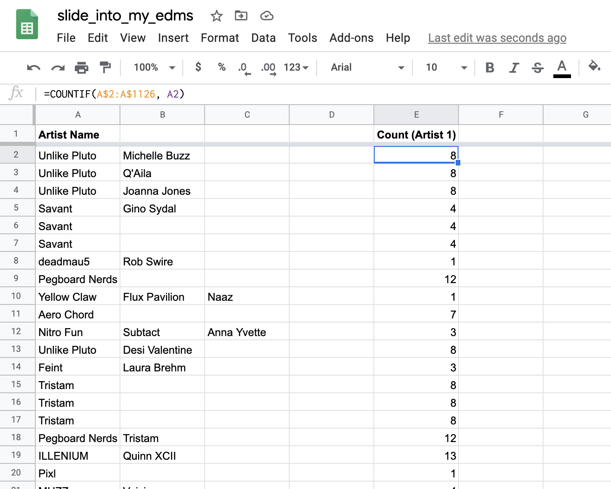
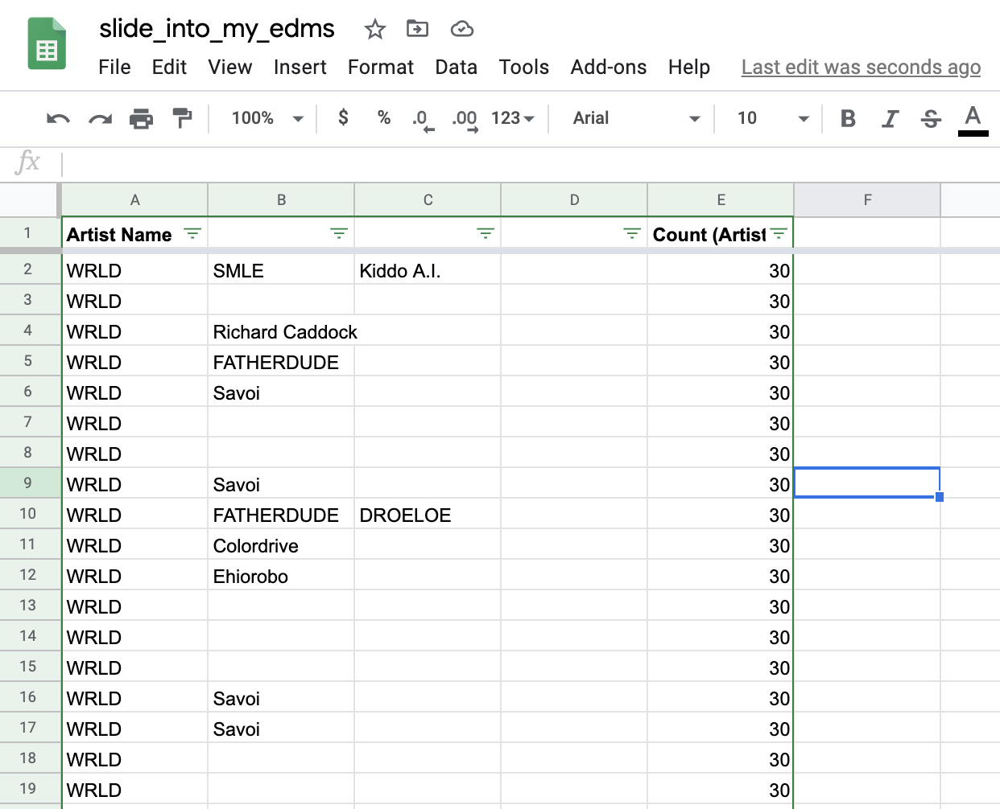
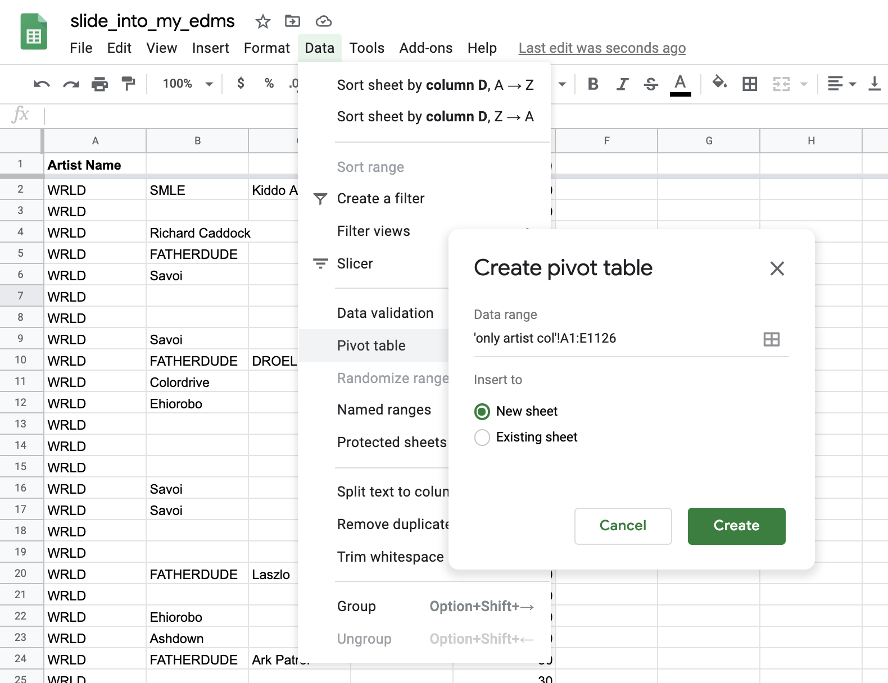
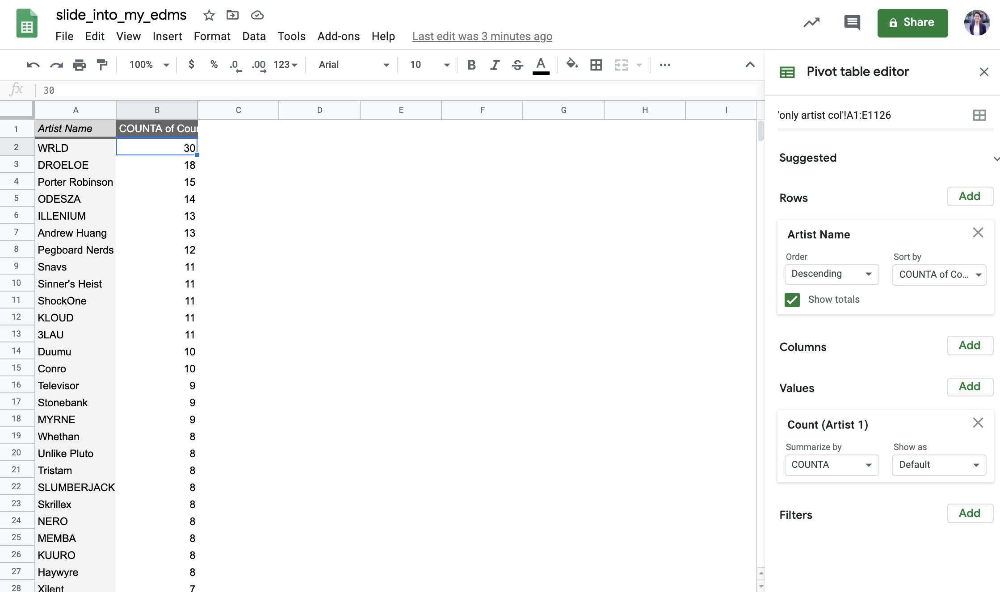

examining ourselves, our biases, & our listening habits
at the end of this video, i mention how mainstream edm (electronic dance music) artists are largely white, cis, and male. and even though i didn't fully know the history of the evolution of edm before embarking on this project, i knew that the history of edm wasn't always so largely cis, white, and male. so, i went ahead, did a deeper(ish) dive, and created a timeline based off of different resources i found on the internet.
documenting the early influencers of certain edm genres (i.e. frankie knuckles, godfather of house) as well as important technology that facilitated the emergence of different edm genres (i.e. the moog synthesizer).
the timeline above gives a glimpse as to how rich the history of edm is, with songs and artists from different countries in europe - particularly alternative and experimental bands who weren't afraid to be unconventional in their music production - and in the u.s., especially the house DJs who wanted to provide a safe space for queer/trans marginalized folks.
looking at this timeline, i couldn't help but wonder how rich and diverse my own edm listening taste was.
was i listening to a variety of artists from different backgrounds? were the songs i had on repeat or the most songs i had on my edm playlist from people of color (poc) or women/gender-nonconforming/nonbinary folks? (spoiler alert: they weren't).
i conducted a rudimentary data analysis to see who my true top edm artists i listened to were (i determined this by seeing the artists who i had the most songs from on my main edm playlist).
here is my main edm playlist (& the first 100 songs of it - there are actually 1.1k+ songs on it):
i then used an open-source tool called exportify to convert this playlist into a csv file.
note: you should be able to connect your spotify account to this web app
once i saw my list of playlists on spotify:
i searched through my tens of playlists (i have a lot) using the arrow buttons on the top and bottom of the page, then clicked 'export' on the playlist i was looking for: in this case, it was "slide into my E'DM's"
i downloaded the outputted .csv file and then took a look at it on google sheets:
what i care most about analyzing is the artist name, because i want to see how often each artist's name shows up on my playlist as a way for me to determine who i listen to the most/who my top artists are. in this case, that would be column c (highlighted below).
i isolated the column with the artist name(s) and put it on another google sheet/tab. then, i went over to 'data' and split the text into columns to see which artist was the main artist and which artist(s) featured on each song on my playlist.
i now want to see how many times an artist's name shows up in column 1, or the first artist that is credited for each song on my playlist (usually this artist is the main artist). to count this, i made a separate column titled "count (artist 1)", and then typed in the following command: =COUNTIF(A$2:A$1126, A2)
note: "A$1126" could be "A$700" or "A$10" or any other number. this number should match the length of your playlist. if your playlist has 1000 songs total, it should be "A$1000".
----- quick explanation of the logic behind this function -----
the function =COUNTIF() takes in 2 arguments. the 1st argument is the range of data you're wanting to compare a data point to, and the 2nd argument is that specific data point. the above function essentially looks at all cells inclusively between A2 and A1126 (the 1st argument - there are 1126 songs in my playlist and A1 is just the title of the column) and sees how many times A2 (the 2nd argument) matches with another cell in that range of cells.
the dollar symbol ($) is so that you can apply this function to the rest of your column (i.e. comparing A3 with A2 through A1126, A4 with A2 through A1126 etc.) without shifting that range A2:A1126. in google sheets, if you don't put the dollar sign in between the column letter and number, the range will shift if you apply this function to an entire column (i.e. without the $ sign, you would be comparing A3 with A3 through A1127 etc.)
----- end of quick explanation -----
once i have applied that function to the whole column, i now have a list of the number of times each first artist listed on each song have repeated within the playlist. i can do this for the second artist listed as well, but for simplicity, i will keep my rudimentary analysis to artist 1 only.
i can now use the 'filter' function on google sheets to order the artist name column by how often they repeat from greatest to least number of times.
now i can see who is featured most among all the songs on this playlist! for me in this playlist, turns out my top artist is actually WRLD, an artist on the canadian label Monstercat. this actually came as a slight surprise to me, because i wouldn't list him automatically on my top 10 favorite artists despite the fact i listen to the most songs with him as a feature/main artist.
an easier way to find out each unique artist you listen to the most is to use google sheet's pivot tables!
go to 'date' and select 'pivot table'. it's best to create the pivot table on a new sheet to avoid erasing any of your hard work.
from there, go to 'rows' and select 'artist name' and 'values' to select 'count (artist 1)'. have 'count (artist 1)' be summarized by 'counta' and show as 'default'. and then sort 'artist name' by 'counta of count (artist 1)' and have this be in descending order (greatest to least). this will give the number of times an artist shows up in a playlist, and WRLD once again is shown to repeat 30 times in my whole playlist.
note: 'kinda' indicates the existence of groups with at least one non cis male member. 'unknown' refers to artists who are generally pretty private and don't have personal details on the world wide web (i.e. kloud).
the unfortunate conclusion: there definitely is a diversity issue within my own treasured 'slide into my E'DM's' playlist. around 93% of my top 30 artists are white and around 87% of them are cis male. i'm not sure what's more embarrassing: not knowing the history of edm for so long or realizing that i as a poc non-male non-cis listener still naturally gravitate to music from cis white male musicians even though i thought i made the effort to branch out more.
in gen z terms, turns out i was more 'basic' than i thought i was. follow this tutorial and see what your top edm artists are like!
i wanted to see if some of my other friends were aware of their own biases in their edm listening habits, so i went ahead and interviewed two of my friends.
note: the following interviews have been edited for clarity and conciseness. they are with two friends who share similar backgrounds with me. both have been listening to edm for as long as i have, albeit in different ways. they are not representative of views others their age hold. because of these similarities in background, views will be biased.
these casual interviews with two close friends of mine who listened to edm for similar durations shed light on the nuances regarding the broader topic of "diversity in edm" and why it's not so simple as just pointing the finger at straight white cis males.
one main takeaway that i got from talking with these friends is that issues underlying the edm scene are common in the music and entertainment industries as well. in other words, these same factors that whitewash edm contribute to the traditional dominance of cis white males, or more broadly, just males, in other industries.
edm labels and music labels in general also need to take firmer stances and actually push for structural change in the industry to highlight local BIPOC and queer/trans voices, because the industry drives the culture enjoyed by consumers, not necessarily the other way around. however, according to emily, this is hard to do if the company is too large or doesn't have enough resources.
made with love by kwon.js